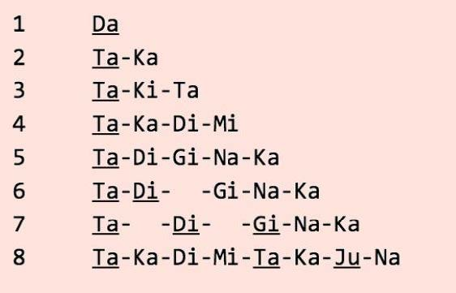
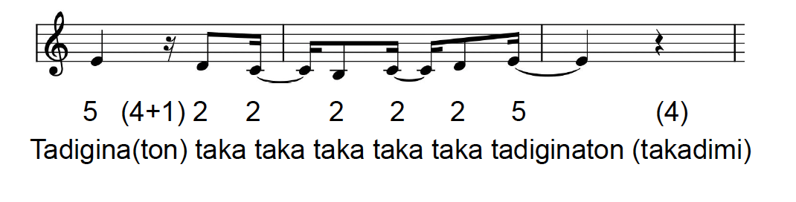

Het Konnakol Systeem
Konnakol is een systeem gebaseerd op het vocaliseren van een ritme. In het zuiden van India bestaat al eeuwen lang zulk een ritmisch systeem (Carnatische klassieke traditie) gebaseerd op onomatopeeën (klanknabootsing). Door deze ritmische ‘taal’ op te dreunen wordt ons pulsgevoel sterker alsook onze voorstelling van hoe een ritme zich gedraagt ten opzichte van een puls. Complexe ritmes kunnen daardoor op een eenvoudige manier ingestudeerd worden. Extra voordeel is dat je het eender waar kan oefenen.
Bij 3 Ta-Ki-Te en bij 5 wordt ook Ta-Di-Gi-Na-Ton gebruikt. Ta Ka Ju Na kan gebruikt worden als je de lengte hebt van twee keer 4 cellen.
Voorbeeld van een ritme ontleed met het Konnakol systeem:
Maatsoort 2/4, kleinste ritmische waarde: een zestiende
